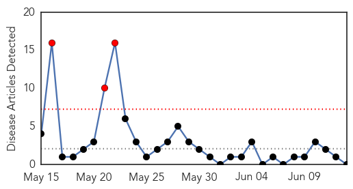
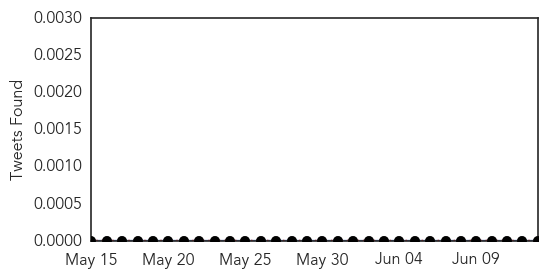
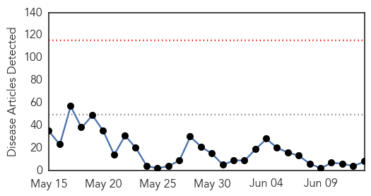
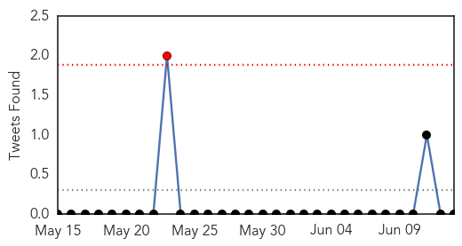
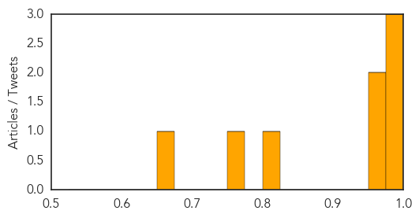

Hepatitis
30-Day Web Trend
3 alerts, 0 warnings

30-Day Twitter Trend
0 alerts, 0 warnings

Article Locations

Article Confidences

Top Articles:
-
No articles found for Jun 13, 2014
Top Tweets:
-
No tweets found for Jun 13, 2014
MERS
30-Day Web Trend
0 alerts, 0 warnings

30-Day Twitter Trend
1 alerts, 0 warnings

Article Locations

Article Confidences
Top Articles:
- 1.000
- Middle East respiratory syndrome coronavirus (MERS-CoV) – update
- 0.999
- Compound fights virus behind MERS
- 0.998
- Over 25% of recent Saudi MERS patients were health workers
- 0.964
- Algeria reports 1st coronavirus fatality
- 0.963
- MERS-CoV confirmed in Iran
- 0.814
- USDA issues order concerning pig virus
- 0.774
- Del. Hog Owners Now Required to Report Deadly Swine Viruses
- 0.660
- Hog owners required to report deadly swine viruses
Top Tweets:
-
No tweets found for Jun 13, 2014